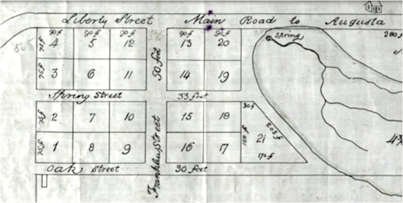

Georgia GeorgiaChatham County |
|
1760s 1763 Nov 17 "Georgia Gazette" - The following tracts of land belonging to Elliott and Gordon the partnership of which has for 4 years expired will be sold at public auction - 50 acres of land on Skidaway Island, late Richard Dowdee's. 1764 Oct 11 - The following land grants have never been carried throught the Auditor General's Office. Unless they are forwarded forthwith, they will be returned to his Excellency and thereby become liable to be vacated: [ list] ...Richard Dowdy 1790s 1792 "Georgia Gazette" - List of persons who have not made references of their taxable property for 1792 ( in Feb 28 1793 edition) - Savannah District - Nathaniel Dowdy 1794 "Columbia Museum and Savannah Advertiser" List of taxes due Chatham County (Mar 2 1798 newpaper edition) - Nathaniel Dowdy L0 1 9 1794 Feb 20 - "Georgia Gazette" All persons indebted to James Johnston and James and Nicholas Johnston (note they were the printers of the "Georgia Gazette" newspaper) are requested to settle their accounts with Mr. Nathaniel Dowdy who is empowered to give discharges for such sums as may be paid to him. After the long indulgences they have given, those who fail in...in the hands of an attorney at Law to be sued for. 1794 Dec 11 - "Georgia Gazette" Grand Lodge...the grand anniversary and general communication of the Most Ancient and Honorable Society of Free and Accepted Masons in Georgia will be holden in Savannah at the Long Room in the Filature...in order to proceed to Christ Chruch where a sermon will be preached by Rev. Brother Lindsey, Grand Chaplain. Tickets for the festival may be had of Brother Nathaniel Dowdy and Nicholas Johnston, Grand Stewards. 1794 Oct 3 - Wills 1773-1817 - Will of James Haviland Fulford, Cordwainer of Villiage of Acton...lands in St Phillips Parish, property in Bahamas ...Extx: Ruth Patton, sole heir. Wit: Alex Weitt, Paul H. Wilkes, and Nathaniel Dowdy. 1794 Dec 11 - "Georgia Gazette" At a Quarterly Communication of the Grand Lodge of Georgia in Savannah on Saturday last....elected officers...[list]...Nathaniel Dowdy and Cunniham Newall: Grand Stewards 1795 Jan 1 - "Georgia Gazette" - Died on Thursday last. Deeply regretted by an extensive area of acquaintences. Mr Nathaniel Dowdy age 32 years. Formerly of the Island of Montserrat. He was a worthy brother - a sincere friend and an excellent companion. 1810s 1819 April 15 -"Daily Georgian" newspaper - Notice - my apprentice to the pilotage of the Savannah River, Joseph Dowdy, having arrived at about the age of 19 and having a disposition to be his own master, I have consented to release him from his indenture...whom I wish well...Elijah Broughton 1819 September 8 Chatham Co GA Administration Bonds - To Benjamin Burton. Whereas Benjamin Dowdy late of county aforesaid deceased, died intestate having whilst he lived and at the time of his death, divers goods, chattels and credits within the county and state aforesaid....grant unto said Benjamin Burton full power to administer the goods, chattles of said deceased....to make a true and perfect inventory and exhibit into the Clerk of Court of Ordinary on or before the 8th of December next. 1819 Chatham Co Court [docket list] - James S Bulloch vs Benjamin Dowdy - "death of defendant suggested" 1820s 8 September 1820. Chatham Co Loose Estate Folio 92. Benjamin Dowdy late of Chatham Co GA Administrator Benjamin Burton (original documents include inventory appraisal, sale auction, notes and estate expenditures beginning July 1819, no other Dowdys mentioned, Also a note owed by Dowdy dated 1815 Effington County GA)
1826 Chatham Co GA Tax List
1826 Savannah City Tax List
 1801 Re-survey of Spring Hill area of Savannah, Chatham Co GA Chatham Co GA DB NN 26 Richard Dowdy is guarantor to a debt 1827 Savannah City Tax List
1827 May 29 Savannah Georgian newspaper pg 2 - Drawing of the Land Lottery - Chatham County fortunate drawers - Richard Dowdy R. S. (revl sold) Lot 87, Dist 4, Sec 3 (Troup Co) 1828 DB PP 154 Richard Dowdy of Savannah sold a slave named Pike (signed w bold R mark) 1828 Savannah City Tax List
1828 Nov 25 - DB SS 570 Jesse Sanderlin sold to Richard Dowdy 60x100 foot lot on Augusta Rd part of Lot 9 Western part of the city; adj Miss Germain's lot; Recorded 1833 1829 November 24 - Chatham Co Loose Estate Files - Richard Dowdy - State of Georgia. City of Savannah. This is the last will and testament of Richard Dowdy. 1st. I direct that all my just debts and funeral charges be paid as soon as possible. 2nd. I give devise and bequeath unto my son John Dowdy his heirs and assigns all that my tract of land situate in Scriven County Georgia containing 850 acres and lying on both sides of Black Creek, also a negro woman named Sary and a boy named Sim - to hold the same to him his heirs and assigns forever. 3rd. I give devise and bequeath unto my daughter Catherine all that my dwelling house and appurtenances at Spring Hill, Savannah, where I now reside with all my right and interest in the Lot where the said dwelling house stands. Also two negro slaves named Bet and Pen - to hold the same to her her heirs and assigns forever. 4th. I give and bequeath unto my son John Dowdy his executors and Administrators in trust - two negro slaves named Jim and Anthony (commonly called Tene) to hold the same in trust for the sole separate and exclusive use of my daughter Judy, wife of John Fry, not subject to her husband's debts or control, for and during her life and at her death to her children if she bares any - but if she dies leaving no children then to my heirs at law. 5th. I give devise and bequeath my Lot Lot (sic) of land with the buildings thereon lying on the Southside of the Augusta Road, opposite the Spring on Spring Hill in Savannah and adjoining Ann Germain's Lot, and my negro slaves Tom, Het, unto my wife Ann Dowdy to hold to her heirs and assigns forever. But also to the future issue of the negro woman Het I bequeath the same as follows - her first offspring I bequeath to my grandson Benjamin Franklin Dowdy, her second offspring to my grand daughter Keziah Dowdy and all other of her offspring to be divided between my wife and children share and share alike. 6th. I give and bequeath my household and kitchen furniture to my wife and my daughter Catherine to be equally divided between them. I give to my wife a cow and calf and to my daughter Catherine two heifers. 7th. I appoint my wife Ann and my son John executrix and executor of my will - and declare this will my last and only will and testament. In witness whereof I have herewith set my hand and seal at Savannah this twenty fourth day of November in the year of our Lord one thousand eight hundred and twenty nine. <mark with bold R> Richard Dowdy. Signed sealed and published [ ] and declared by the testator Richard Dowdy to be his last will and testament in the presence of us who in his presence and in the presence of each other at his request have signed our names as Witnesses: B Constantine, B Griffin, RR Cuyler. Georgia. Chatham County. Court of Ordinary - September Term 1832. Present their names Elias [ ] Isaac Mims and William Harrison [ ] 1830s 1830 Chatham Co GA Census
1830 Savannah City Tax List
1831 Chatham Co GA Tax List
1831 Savannah City Tax List
1832 Chatham Co GA Tax List
August 28, 1832 Daily Savannah Republican. (Savannah, Ga.) - DIED - On the 27th last. Mr Richard Dowdy in the 84th year of his age (Note: born 1752). Mr D was a citizen of this place for 9 years and faithfully served in the Revolutionary War 3 September 1832 Chatham Co Loose Estate Index Folio 124. Richard Dowdy Executor John L Dowdy (considerable number of original estate documents including the will) 1832. Inventories and Appraisments Richard Dowdy L2,864 1833 Chatham Co GA Tax List
Searched deed index through 1857-8
|